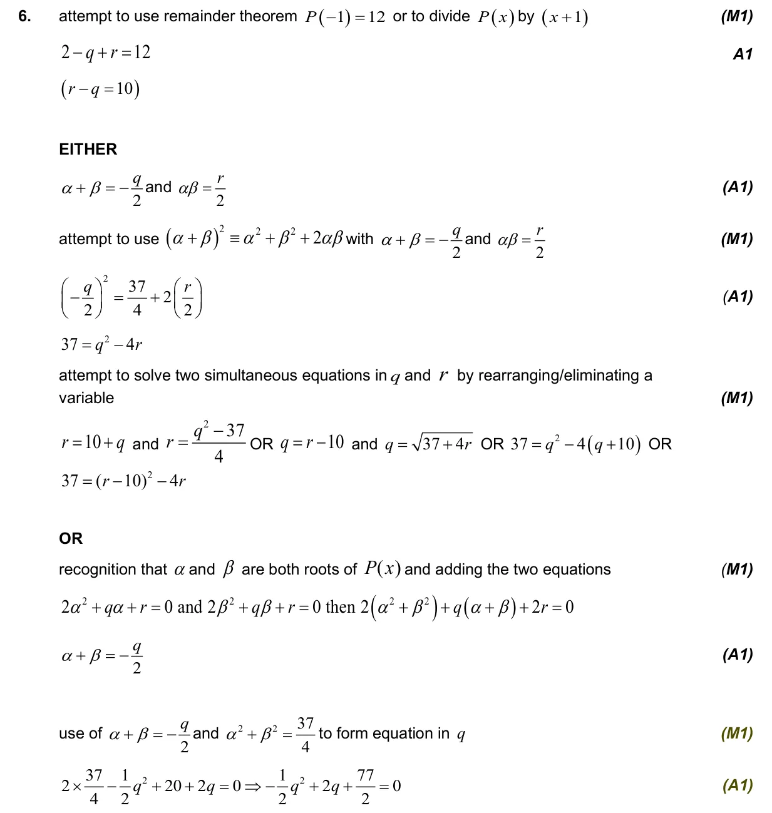
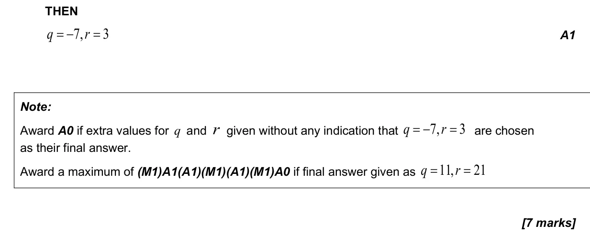

2.12 Polynomial functions: factor and remainder theorems, sum and product of roots2.7 Solutions of quadratic equations and inequalities, discriminant and nature of roots
Question

Markscheme


7 marks - Nov P2 TZ3 - Section A - Mathematics: Analysis and Approaches HL

